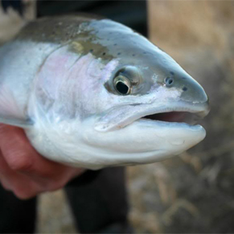

Welcome to the TRAA
Dedication Today for Tomorrow
"For the enhancement, protection and promotion of a viable,
multi-species fishery within the Thames River watershed.
Trout
Ha0chery
TRAA Trout Hachery
The TRAA trout hatchery is a popular activity of the TRAA as it's a great teaching tool with regard to the life cycle of a trout. Those involved with the hatchery get to see firsthand the development stages of the egg and the fry before their final release destinations to area streams. Volunteers attend to the operation every day to maintain the health and well-being of the trout. As the saying goes, many hands make light work. There are ideally 2 members assigned for each day of the week. This is desirable as they can cover for each other and also allows us to match up anyone wanting to "learn the ropes" with an experienced mentor. At this time there are still openings those wanting to be a part of the trout hatchery rotation. You can Contact Us or attend a TRAA General Meeting (see above) for more info.
Support From Local Buissiness
Gallery
Membership
MEMBERSHIPS ARE DUE
Fundraising
FUNDRAISING..
Media
Follow Us On...


Ownership
Copyright